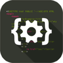

首页 > Python > Python编程环境搭建
Python编程环境搭建
本章重点介绍 Python 编程环境的搭建，包括各个平台下 Python 的下载和安装，常见 IDE 的使用，如何运行 Python 程序等。我还会亲自带着大家编写并运行第一个 Python 程序，让大家认识一下最简单的 Python 代码。
本章的后半部分还介绍了一下 Python 基础语法，包括注释、缩进、编码规范、标识符及命名规范、关键字等。
从本章开始，我们就正式开始学习 Python 代码了。
- 本章内容：
- 1. Windows安装Python（图解）
- 2. Linux（Ubuntu）系统安装Python
- 3. Mac OS安装Python环境
- 4. python不是内部或外部命令的解决方法
- 5. 如何运行Python程序？
- 6. 第一个Python程序——在屏幕上输出文本
- 7. IDE（集成开发环境）是什么
- 8. Python IDE有哪些，哪款适合初学者？
- 9. Python IDLE使用方法详解（包含常用快捷键）
- 10. PyCharm下载和安装教程（包含配置Python解释器）
- 11. PyCharm运行Python程序
- 12. Python Eclipse+PyDec下载和安装教程（超级详细）
- 13. Eclipse+PyDec运行Python程序
- 14. Python VS Code下载和安装教程
- 15. VS Code运行Python程序
- 16. Python Visual Studio下载和安装教程
- 17. Visual Studio运行Python程序（超级详细）
- 18. Sublime Text运行Python程序（包含下载和安装）
- 19. Python Spyder下载、安装和使用教程
- 20. Jupyter Notebook：科学计算领域必备的Python IDE
- 21. 手机上运行Python程序
- 22. Python注释（多行注释和单行注释）用法详解
- 23. Python缩进规则（包含快捷键）
- 24. Python编码规范（PEP 8）
- 25. Python编码规范的重要性
- 26. Python标识符命名规范
- 27. Python关键字（保留字）一览表
- 28. Python内置函数一览表
关注公众号「站长严长生」，在手机上阅读所有教程，随时随地都能学习。
不定期发布学习路线+书籍文档+优质视频，为初学者指点迷津。
绑定网站登录功能，再也不用担心密码丢失。
编程11年，建站10年，创业7年，写作6年，既有硬知识，也有软技能。
长期更新，坚持原创，敢说真话，凡事有态度。

微信扫码即可关注